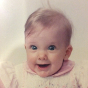
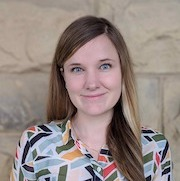
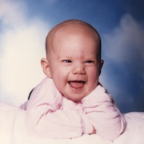
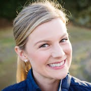
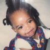
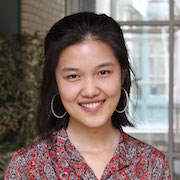
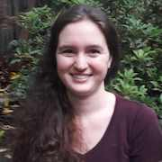
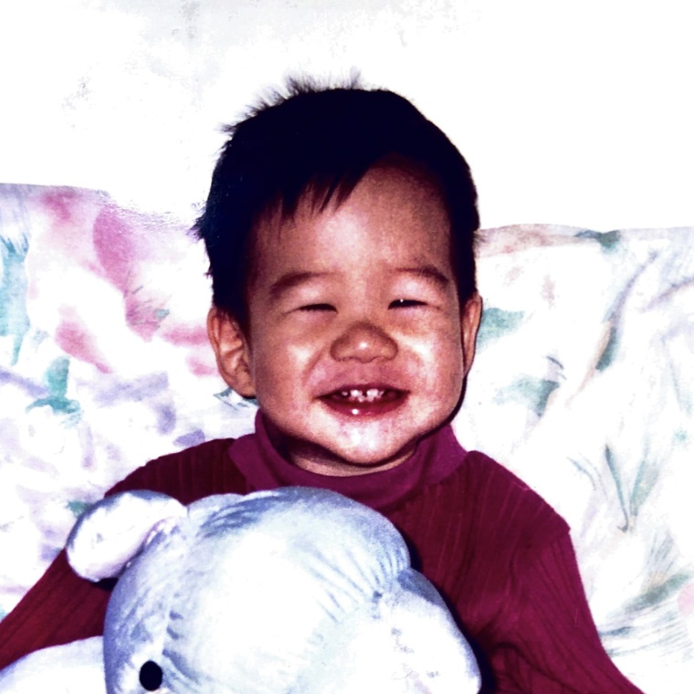

Language and Cognition Lab Fall 2018
Principal Investigator


Michael C. Frank (blog, twitter)
Mike did his undergraduate degree at Stanford in Symbolic Systems and his PhD work at MIT. He is broadly interested in the relationship between language and cognition, especially as it relates to children's early language development.
Mike did his undergraduate degree at Stanford in Symbolic Systems and his PhD work at MIT. He is broadly interested in the relationship between language and cognition, especially as it relates to children's early language development.
Postdocs


Bria Long
Bria did her undergraduate work at Stanford and is happy to be back on campus. She spent two years at École Normale Supérieure in France before doing her graduate work in vision science at Harvard University. Her postdoctoral work focuses on the development of visual concepts. For example, how do children learn what is —- and what isn't —- a cup? How do children's visual concepts change across development?
Bria did her undergraduate work at Stanford and is happy to be back on campus. She spent two years at École Normale Supérieure in France before doing her graduate work in vision science at Harvard University. Her postdoctoral work focuses on the development of visual concepts. For example, how do children learn what is —- and what isn't —- a cup? How do children's visual concepts change across development?


Kat Adams Shannon
Kat completed her PhD in developmental psychology at NYU in the Steinhardt School of Culture, Education, and Human Development. She broadly studies how young children adapt their attention and learning behaviors to best match different early environments, with particular focus on understanding variability and strengths in contexts of early adversity. A key aim of her research is to create and collaborate on innovative uses of technology and statistical methods to support education and developmental science.
Kat completed her PhD in developmental psychology at NYU in the Steinhardt School of Culture, Education, and Human Development. She broadly studies how young children adapt their attention and learning behaviors to best match different early environments, with particular focus on understanding variability and strengths in contexts of early adversity. A key aim of her research is to create and collaborate on innovative uses of technology and statistical methods to support education and developmental science.
Graduate Students


Rondeline Williams
Rondeline received her B.A. in Psychology from Cornell University in 2017 before completing an NIH-funded research project at The Ohio State University. She is interested in the impact of auditory noise on young children's processing efficiency and language development.
Rondeline received her B.A. in Psychology from Cornell University in 2017 before completing an NIH-funded research project at The Ohio State University. She is interested in the impact of auditory noise on young children's processing efficiency and language development.

Anjie Cao
Anjie received her B.S. in Cognitive Science with an additional major in Philosophy from Carnegie Mellon University in 2020. She is interested in the theoretical foundations of infant looking time paradigms.
Anjie received her B.S. in Cognitive Science with an additional major in Philosophy from Carnegie Mellon University in 2020. She is interested in the theoretical foundations of infant looking time paradigms.


Veronica Boyce
Veronica received her BS in Brain and Cognitive Sciences from MIT in 2019 where she did work on incremental language processing. She is interested in adaptation and convention formation in conversation.
Veronica received her BS in Brain and Cognitive Sciences from MIT in 2019 where she did work on incremental language processing. She is interested in adaptation and convention formation in conversation.

Alvin Tan
Alvin received a BA in Psychology and Linguistics from Oxford in 2020, and an MS in Symbolic Systems from Stanford in 2022. He is interested in language learning in young children.
Alvin received a BA in Psychology and Linguistics from Oxford in 2020, and an MS in Symbolic Systems from Stanford in 2022. He is interested in language learning in young children.


Samah Abdelrahim
...
...
Research Staff


Bobby Sparks
...
...
Lab Alums
- Georgia Loukatou (Research Fellow)
- Eva Portelance (Graduate Student)
- Jessica Mankewitz (Research Assistant) - Graduate Student, UW Madison
- Sama Radwan (Research Assistant)
- George Kachergis (Research Scientist) - SkillPrint
- Angeline Tsui (Postdoctoral Fellow) - Research Data Scientist, Huawei Technologies
- Yang Wu (Postdoctoral Fellow) - Assistant Professor, University of Toronto
- Alex Carstensen (Postdoctoral Fellow) - Postdoctoral Fellow, UC San Diego
- Joseph Outa (Research Assistant)
- Charles Murray (Research Assistant)
- Megan Merrick (Research Assistant) - Graduate Student, Indiana University
- Hang Jiang (Graduate Student) - Graduate Student, MIT
- Ben Peloquin (Graduate Student) - Data Scientist, Apple
- Pooja Paul (Postdoctoral Scholar)
- Benny deMayo (Research Assistant) - Graduate Student, Princeton University
- Vivian Zhang (Research Assistant) - Graduate Student, Cornell University
- Erica Yoon (Graduate Student) - Teaching Coordinator for Symbolic Systems Program, Stanford University
- Judith Fan (Postdoctoral Scholar) - Assistant Professor, UC San Diego
- Manuel Bohn (Postdoctoral Scholar) - Postdoctoral Scholar, Leipzig Research Center for Early Childhood Development
- Abdellah Fourtassi (Postdoctoral Scholar) - Assistant Professor, Aix-Marseille University
- Kyle MacDonald (Graduate Student) - Postdoctoral Scholar, UCLA
- Tom Hardwicke (Postdoctoral Scholar) - Postdoctoral Scholar, Meta-Research Innovation Center, Charité – Universitätsmedizin Berlin
- Alessandro Sanchez (Research Assistant) - Software Engineer, Atomwise
- Emily Hembacher (Postdoctoral Scholar) - Data Scientist, Nextdoor
- Danielle Kellier (Research Assistant) - Medical Student, University of Pennsylvania
- Gabe Doyle (Postdoctoral Scholar) - Assistant Professor, San Diego State University
- Veronica Cristiano (Research Assistant) - Grad student, Gallaudet University
- Molly Lewis (Graduate Student) - Research Faculty, CMU
- Dan Yurovsky (Postdoctoral Fellow) - Assistant Professor, CMU
- Rose Schneider (Research Assistant) - UX Researcher, Blink
- Mika Braginsky (Research Assistant) - Postdoctoral Scholar, Stanford University
- Ann Nordmeyer (Graduate Student) - Assistant Professor, Southern New Hampshire University
- Sarah James (Research Assistant)
- Andrew Weaver (Research Assistant)
- Alexandra Horowitz (Graduate Student) - UI Researcher, Facebook
- Ally Kraus (Research Assistant) - Analyst, Education Elements
- Janelle Klaas (Research Assistant)
- Theresa Hennings (Research Assistant) - Graduate Student, University of Washington
- Stephan Meylan (Research Assistant) - Postdoctoral Fellow, Duke University and MIT
- Chigusa Kurumada (Graduate Student) - Assistant Professor, University of Rochester
- Marisa Casillas (Graduate Student) - Assistant Professor, University of Chicago
- Alex Stiller-Shulman (Master's Student) - Assistant Professor, San Diego Miramar College
Honors Students
- Khuyen Le (2021) – Symbolic Systems
- Gloria Yi (2021) - Symbolic Systems
- Hannah Marshall (2021) - Psychology
- Claire Baker (2021) - Human Biology
- Elizabeth Swanson (2021) - Human Biology
- Isabella Duan (2021) - Human Biology
- Tania Dhaliwal (2020) - Symbolic Systems
- Sophie Regan (2020) - Symbolic Systems
- Benjamin deMayo (2018) - Psychology
- Tamara Mekler (2017) - Human Biology
- Allison Dods (2016) - Symbolic Systems
- Sarah Lucy Case (2015) - Human Biology
- Rachel Chung (2015) - Science, Technology, and Society
- Nicholas Moores (2015) - Linguistics
- Elise Sugarman (2014) - Symbolic Systems
- Laura Soriano (2014) - Human Biology
- Kaia Simmons (2013) - Human Biology
- Stephanie Muscat (2013) - Human Biology
- Rebecca Chung (2012) - Symbolic Systems
Summer Interns
- Brittany Linus (2022) - Stanford University Symbolic Systems
- Deba Elaiho (2021 & 2022) - Stanford University Human Biology
- Jason Miranda (2022) - Stanford University Human Biology
- Mary Markley (2022) - Stanford University Linguistics
- Minh Khổng Bùi (2022) - University of California Fullerton
- Morgan Wyatt (2022) - Stanford University Psychology
- Renaecia Mae Deleon Guerrero (2022) - Stanford University Human Biology
- Isaac Bever (2021) - Stanford University Symbolic Systems
- Grace Butler (2021) - San José State University
- Qi Han (2021) - Stanford University Linguistics
- Ummara Khan (2021) - Stanford University Human Biology
- Hannah Marie Matteson (2021) - Stanford University Psychology
- Brennan Nick (2021) - Stanford University Linguistics
- Isobel Taylor (2021) - Stanford University Psychology
- Jiayi Wang (2021) - Boston University
- Ruby Ru (2020) - Smith College
- Yiling (Elaine) Ren (2020) - Trinity College
- Naiti Bhatt (2020) - Scripps College
- Elizabeth Swanson (2020) - Stanford University Linguistics
- Hannah Marshall (2020) - Stanford University Psychology
- Claire Baker (2020) - Stanford University Human Biology
- Isabella Duan(2020) - Stanford University Human Biology
- Gloria Yi (2020) - Stanford Univeristy Symbolic Systems
- Sophie Regan (2020) - Stanford University Symbolic Systems (M.S.)